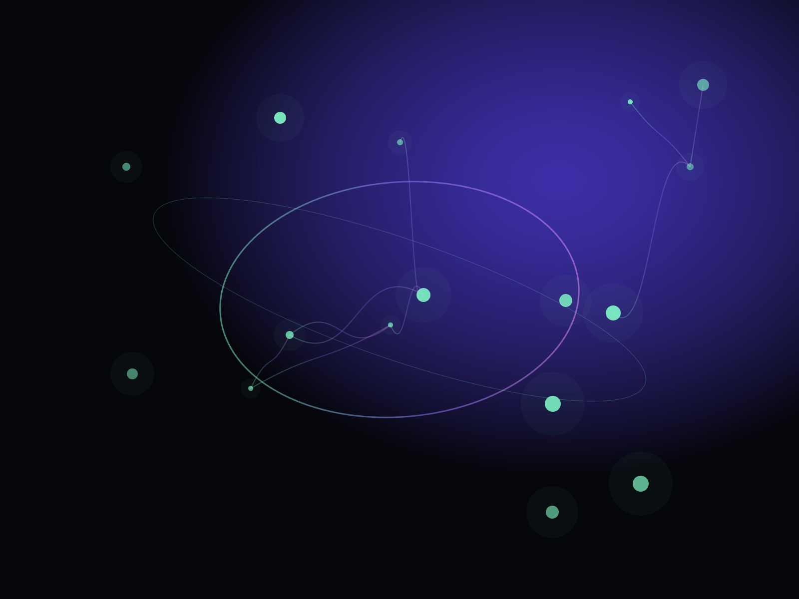
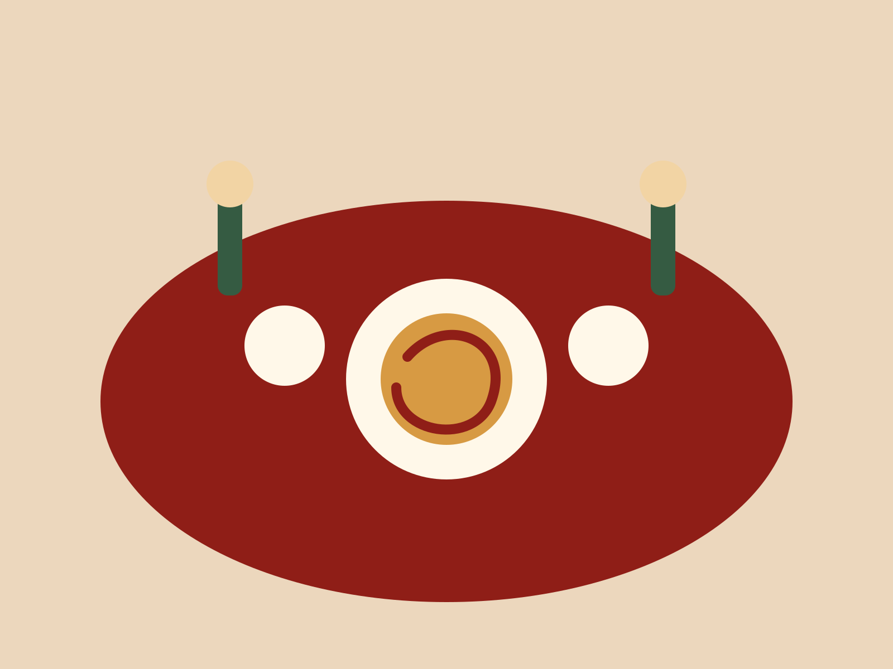
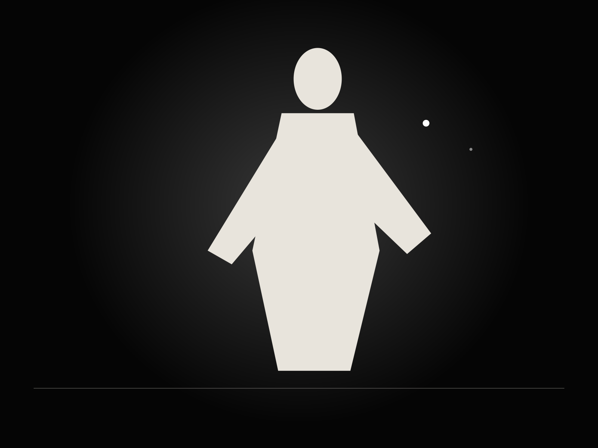
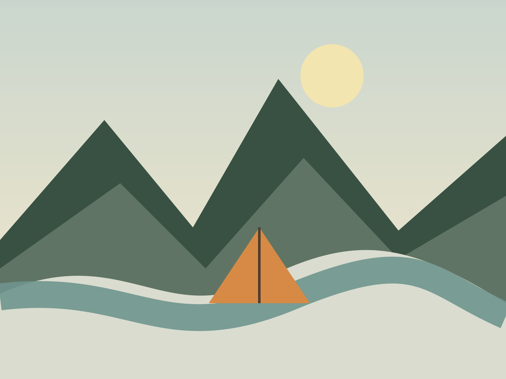

Explain
Make the offer, audience, and value legible before attention runs out.
Mosaic Labs turns products, services, and brands into clear, distinctive websites built to earn attention, explain value, and move people to act.
Selected work ↘The structure, pace, typography, imagery, and interaction change with the business. The standard stays the same: clear, memorable, usable, and complete.

A technical product site that turns orchestration, routing, policy, and observability into a clear enterprise story.
View site ↗
A warm neighborhood restaurant site built around atmosphere, menu discovery, and reservations.
View site ↗
High-energy training, coaching credibility, and an assessment-led conversion path.
View site ↗
A quiet care practice site focused on comfort, practitioner trust, and easy booking.
View site ↗
A dark, image-led fashion site for collection storytelling and private appointments.
View site ↗
A friendly consumer-finance product site balancing feature education, pricing, and security.
View site ↗
An expedition site built around trip selection, readiness, field notes, and planning.
View site ↗An institutional advisory site with a sober editorial system and decision-focused messaging.
View site ↗A practical accounting and advisory site built around clear reporting and a better monthly finance rhythm.
View site ↗
An earthy residential landscape site for design, construction, projects, and estimates.
View site ↗Design choices matter because they shape whether people understand the offer, trust the business, and know what to do next.
Make the offer, audience, and value legible before attention runs out.
Use hierarchy, specificity, proof, and art direction to build trust.
Lead naturally toward enquiries, bookings, demos, purchases, or sign-ups.
Build responsive systems that can grow without collapsing into a template.
Positioning, structure, visual direction, responsive design, and front-end in one continuous process.
Sharper structure, clearer conversion paths, stronger visual identity, and a cleaner responsive system.
Responsive implementation, interaction, accessibility, performance, and the details that usually disappear in handoff.
Small enough for direct attention. Broad enough to move between brand, product, content, and code without losing the thread.